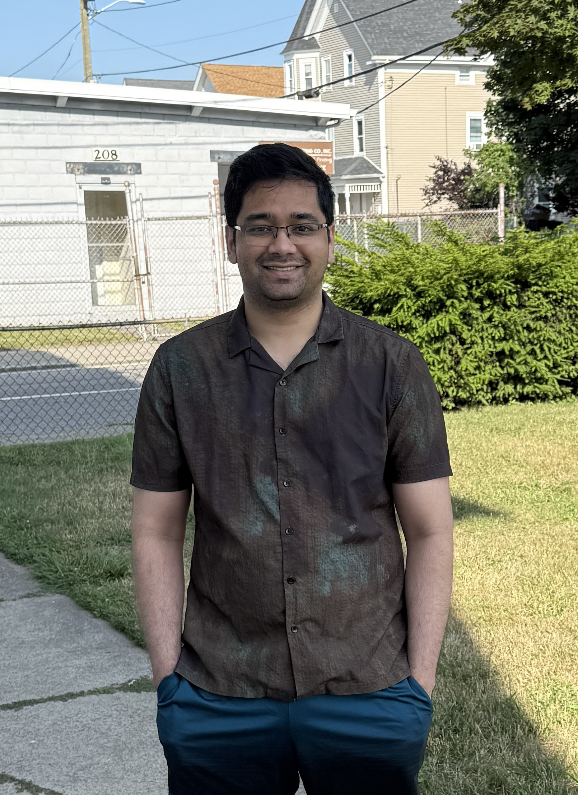

Himanshu Hegde

himanshu.hegde@outlook.com
 7760549176
7760549176
Howdy! I am Himanshu Hegde, originally from Bengaluru. I did my BE from RVCE in 2017, and my MS from Texas A&M University in 2022. So far, my career has been in the engineering simulation software industry - namely, I have worked at ESI Group in Bengaluru and Dassault Systemes in the US. Across my education and jobs, I have worked on several software and mechanical projects, which has inspired me to move into the field of developing software. Please explore the other pages here and don't hesitate to contact me. Thanks for visiting!